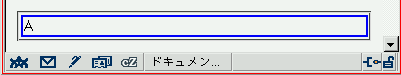

ブラウザの閲覧領域からはみ出している要素がないにもかかわらず、スクロールバーが表示される場合がある。
閲覧領域をはみ出ないように調整しています。
Moz1.0（標準モード）
「Working with CSS - CSS Hints for Internet Explorer 5」内に、この現象と考えられるバグの解説があります。こちらを参照してください。（非公式ですが）日本語に訳したものはこちらです。
MacIE5.xで発生する模様。